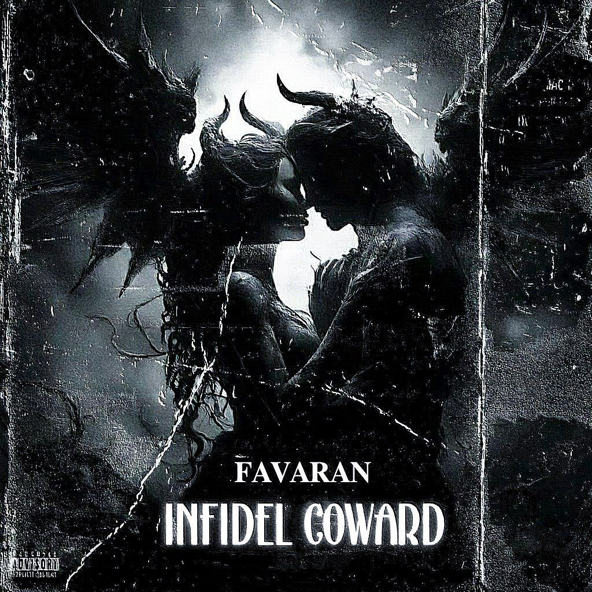

Rafti Ke Nabashi
Rafti Ke Nabashi

Infidel Coward
مسیحا فوران یک هنرمند مستقل در سبک آراندبی و رپ است
او تنظیم، میکس و مسترینگ موزیکهایش را خودش انجام میدهد
.با فضای دارک و ملودیهای خاص سعی میکند موزیکهایی بسازد که احساس واقعی منتقل کنند
🎧 Hip-Hop / Rap / R&B
📍 ایران
.سایت متعلق به فوران میباشد